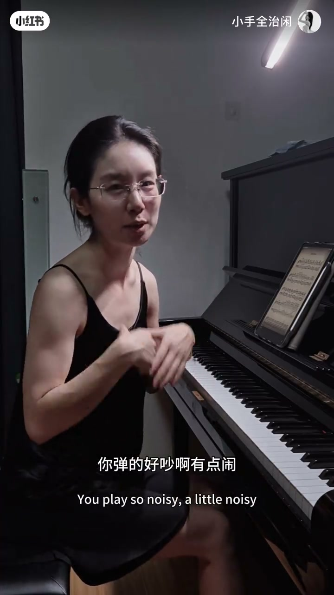
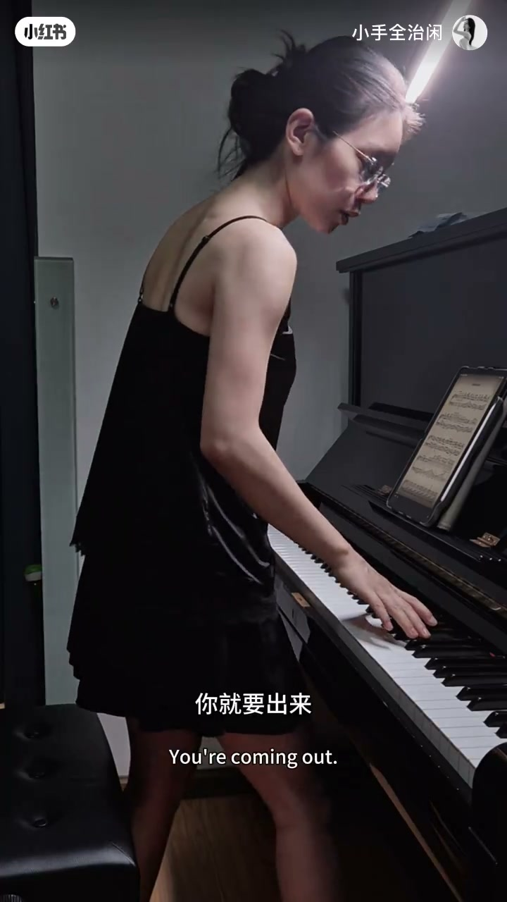
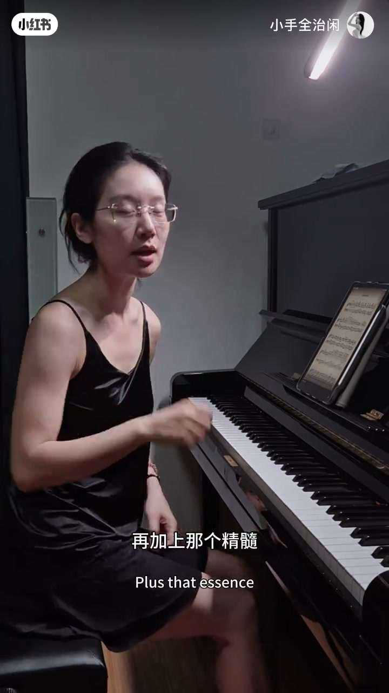
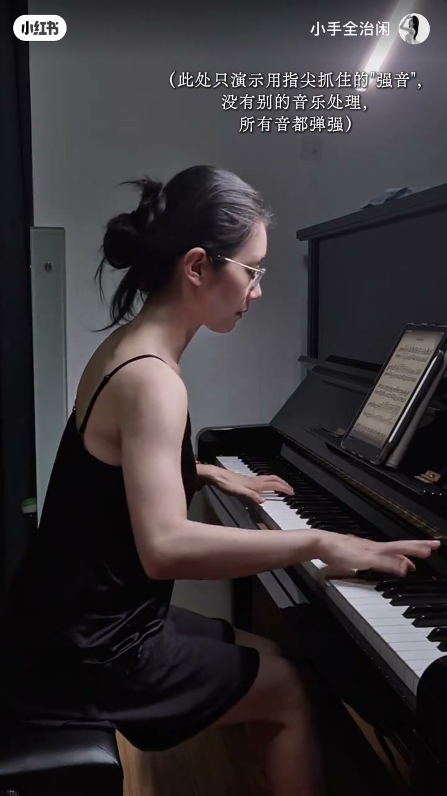
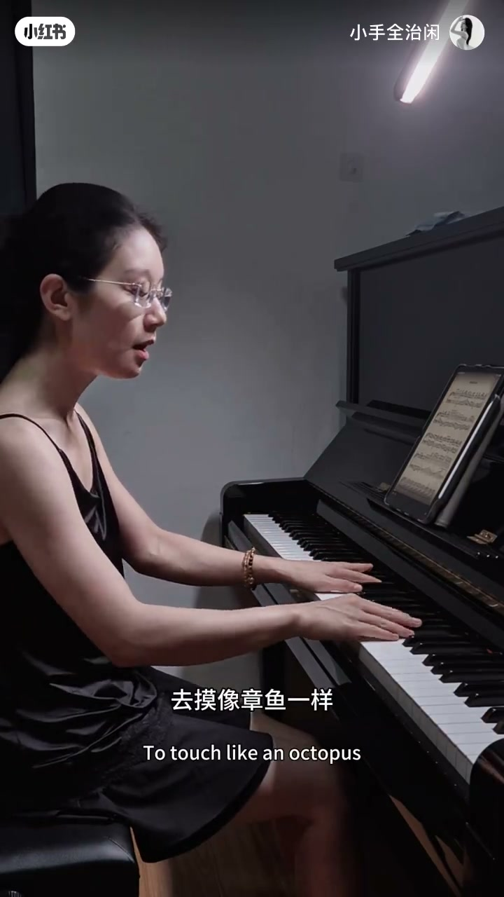

内容要点
作者对比「用指尖 / 不用指尖」的听感，点出穿音教授课上的提壶灌顶：弹强时明明使劲，却要么力量出不来，要么响得吵、闹。前提是大臂往前送、不耸肩；力要流动，不能拍苍蝇式砸死。精髓是送完后指尖瞬间抓住、立住——音更透亮不死，旋律也更清晰，左手触键则像章鱼一样摸、三关节主动而不必过度勾尖。
知识结构
强音使劲却出不来，或响却吵；提壶灌顶点在「抓指尖」。
不耸肩、往前推琴；站起试 Ring Drops，先让手臂出来。
力流动 + 送完瞬间抓住立住；对照不抓=吵且死。
指尖让旋律清晰；左手章鱼摸触、三关节主动。
先送大臂 → 力流动 → 指尖瞬间抓住立住；砸下去不动=拍苍蝇，响≠专业。
响≠专业：问题出在「抓指尖」
[00:00 → 00:41]开场先让人听「用指尖和不用指尖」的区别。作者说这是昨天听穿音教授讲课时被提壶灌顶的一点：弹强时觉得已经很使劲，力量却出不来；或者已经弹得很响，老师仍说「你好吵啊，有点闹」。
精髓落在「抓指尖那么一下」。读书时老师也讲过：前提是大臂要送，不能怂肩，大臂与身体往前送，感觉在往前推钢琴——这一步没做到，后面都白练。

先送大臂：站起来练 Ring Drops
[00:41 → 01:16]若大臂还没送出去，先尝试站起来，用曲目片段（口播 Ring Drops）把前面几个音「送出来」，感觉整个手臂往下走。
做到这一步之后，若仍觉得吵、音很死僵在那里，就要进入下一层：不是再砸重一点，而是让力流动起来。

拍苍蝇 vs 指尖抓住
[01:16 → 02:23]「啪一下下去不动」就像拍苍蝇——声音大但死。一定要让力流动；完成流动后再加上精髓：指尖立住，送完瞬间抓住，音就感觉立起来了。
对照听：不抓住会很吵、虽然也很大；加上指尖不仅更透亮，而且不死，听感多了一层「立住」的坚实。本段演示刻意只弹抓住的强音，不做别的音乐处理。


旋律清晰 + 左手像章鱼
[02:23 → 03:41]用上指尖后，旋律更清晰，能和左手伴奏区别开。左手触键也要变：去摸，像章鱼一样——不必把指尖勾得特别厉害，但三关节非常主动、立起来。
收束：不论弹强时的「抓住」，还是单旋律的「指尖往回勾一下」，都要去试——一定要把指尖勾出去。
